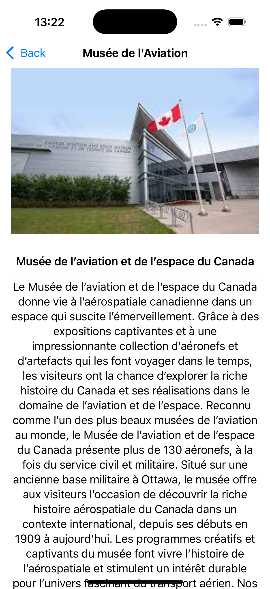
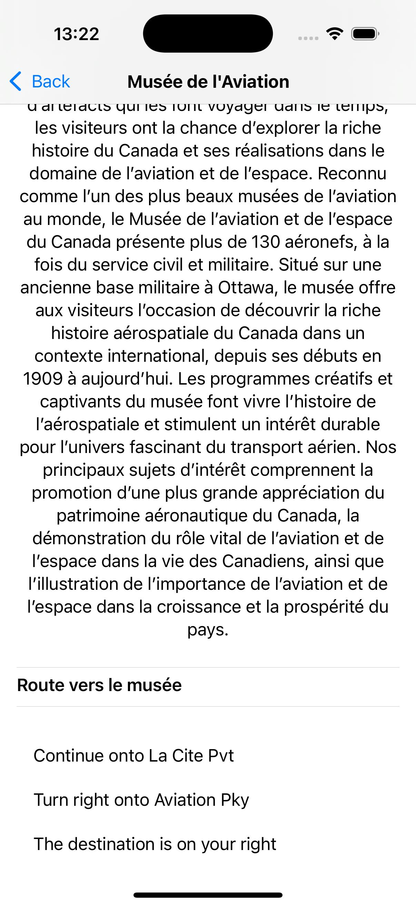

Les Musées nationaux d'Ottawa
Objectif
Créer une application iOS interactive qui affiche une carte des musées nationaux d’Ottawa, permettant aux utilisateurs de :
- • Visualiser les emplacements des musées sur une carte.
- • Sélectionner un musée pour afficher des informations détaillées.
- • Consulter le site web officiel du musée sélectionné.
- • Afficher l’itinéraire depuis la position actuelle de l’utilisateur jusqu’au musée sélectionné.
Ressources fournies
Les ressources suivantes sont disponibles pour faciliter le développement :
- Fichier des musées : Contient les informations détaillées sur chaque musée, y compris le nom, les coordonnées géographiques et l’URL du site web.
- Images : Ensemble d’icônes et d’images pour l’interface utilisateur.
Fonctionnalités requises
Affichage de la carte
- • Intégrer une carte interactive centrée sur la ville d’Ottawa.
- • Afficher la position actuelle de l’utilisateur sur la carte.
- • Placer des marqueurs pour chaque musée en utilisant les coordonnées fournies dans le fichier JSON.
Sélection d’un musée
- • Permettre à l’utilisateur de toucher un marqueur pour sélectionner un musée.
- • Sélectionné et proposer deux options :
- • Afficher plus d’informations.
- • Visiter le site web du musée.
Navigation vers le site web du musée 
- • Intégrer une WebView pour afficher le site web officiel du musée sélectionné.
- • Assurer une navigation fluide entre la vue principale et la WebView.
Faites une recherche sur l’utilisation de WebView et l’importation de WebKit dans votre projet.
Affichage des informations détaillées
Créer une nouvelle vue affichant :
- • Une image représentative du musée.
- • Le nom et une description du musée.
- • L’itinéraire textuel depuis la position actuelle de l’utilisateur jusqu’au musée.


Directives techniques
- • Utilisation de MapKit : Pour intégrer et gérer la carte interactive.
- • Gestion de la localisation : Demander l’autorisation de l’utilisateur pour accéder à sa position actuelle et l’afficher sur la carte.
- • Intégration de WebView : Importer le framework WebKit et utiliser WKWebView pour afficher les sites web des musées.